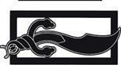

Dostlar ve Düşmanlar
Rand fazla uzağa koşmadı, sadece ahırın köşesindeki saldırı kapısına kadar. Oraya varmadan önce yavaşlayarak yürümeye başladı, rahat ve acelesiz görünmeye çalışıyordu.
Kemerli kapı sıkı sıkı kapalıydı. Ancak iki adamın yan yana geçebileceği genişlikteydi, ama dış surdaki tüm kapılar gibi, siyah demirden geniş şeritlerle kaplanmış ve kalın bir çubukla kilitlenmişti. Kapının önünde düz konik miğferleri ve hem çelik plakalı, hem de örme zırhları ile sırtlarındaki uzun kılıçlarıyla birlikte iki Muhafız duruyordu. Altın renkli cüppelerinin göğsünde Kara Şahin arması vardı. Aralarından birini, Ragan'ı, biraz tanıyordu. Ragan'ın esmer yanağına bir Trolloc oku, kaskının arkasından görünen beyaz üçgen şeklinde bir yara izi bırakmıştı. Rand'ı gördüğünde Ragan'ın buruşmuş teni bir gülümsemeyle çukurlaştı.
"Barış seni bulsun, Rand al'Thor." Ragan çanların sesini bastırmak için neredeyse bağırıyordu. "Gidip tavşanları kafalarından vurmaya mı niyetlisin, yoksa hâlâ o sopanın bir yay olduğunda ısrarlı mısın?" Diğer Muhafız kapının ortasına yaklaşmak için yer değiştirdi.
"Barış seni bulsun, Ragan," dedi Rand önlerinde durarak. Sesini sakin tutmak için çaba göstermesi gerekiyordu. "Bunun yay olduğunu biliyorsun. Beni onunla ok atarken görmüştün."
"At üzerinden işe yaramaz," dedi diğer Muhafız ters ters. Rand onu tanımıştı, hiç kırpılmıyormuş gibi görünen çökük, siyaha yakın gözleri vardı. Miğferinin içinden mağaranın içindeki iki oyuk gibi dışarıyı süzüyorlardı. Başına kapıları Masema'nın tutmasından büyük bir talihsizlik gelebileceğini de düşündü, ama bir Kızıl Aes Sedai değilse, bunun nasıl olabileceğine emin değildi. "Çok uzun," diye ekledi Masema. "Sen o canavarla bir ok sallayamadan, ben bir süvari yayıyla üç ok atabilirim."
Rand bunu bir şaka olarak görüyormuş gibi kendisini sırıtmaya zorladı. Masema'nın bir şaka yaptığını ya da yapılan bir şakaya güldüğünü hiç duymamıştı. Fal Dara'daki erkeklerin çoğu Rand'ı kabullenmişti; Rand Lan'den eğitim alıyor, Lord Agelmar onu masasına oturtuyordu ve en önemlisi, Fal Dara'ya bir Aes Sedai olan Moiraine ile birlikte gelmişti. Ancak bazıları onun dışlanmış biri olduğunu unutamıyor, onunla sadece iki kelime, onu da mecbur kaldıklarında konuşuyordu. Masema bunların en beteriydi.
"Benim için yeteri kadar iyi," dedi Rand. "Tavşanlardan konu açılmışken, Ragan, beni dışarı salsan nasıl olur? Bütün bu gürültüyle telaş, bana fazla geldi. Hiç tavşan görmesem bile dışarıda tavşan avlamak daha iyi."
Ragan arkadaşına bakmak için hafifçe yana döndü ve Rand umutlanmaya başladı. Ragan'ın dehşetli yara izini yalancı çıkaran yumuşak başlı bir tabiatı vardı ve Rand'ı sever görünüyordu. Ama Masema çoktan başını iki yana sallamaya başlamıştı. Ragan içini çekti. "Olamaz, Rand al'Thor." Açıklamak istermiş gibi kafasını Masema'ya doğru hafifçe eğerek başını salladı. Bir tek kendisine kalsa... "Kimse yazılı bir geçiş izni olmadan buradan ayrılamaz. Birkaç dakika önce sormaman kötü oldu. Kapıları kapama emri daha biraz önce geldi."
"Ama Lord Agelmar neden beni içeride tutmak istesin ki?" Masema, Rand'ın sırtındaki çıkınları süzüyordu. Rand o orada yokmuş gibi davranmaya çalıştı. "Ben onun konuğuyum," diye Ragan'a sözlerini sürdürdü. "Şerefim üzerine, şu son birkaç haftada istediğim zaman gidebilirdim. Neden bu buyruğu benim için vermiş olsun? Bu emir Lord Agelmar'dan geldi, değil mi?" Bunu duyan Masema gözlerini kırptı ve yüzünden hiç eksik olmayan kaş çatışı daha da sert bir hal aldı; neredeyse Rand'ın çıkınlarını unutacak gibiydi.
Ragan güldü. "Başka kim böyle bir emri verebilir ki, Rand al'Thor? Elbette, bana emri aktaran Uno'ydu, ama kimin emri olabilirdi ki?"
Masema'nın Rand'ın yüzüne dikilmiş gözleri kıpırdamadı. "Kendi başıma dışarı çıkmak istiyorum, o kadar," dedi Rand. "O halde bahçelerden birini deneyeyim. Tavşan bulunmaz, ama en azından kalabalık olmaz. Işık seni aydınlatsın ve barış seni bulsun."
Hiçbir şekilde bahçelere yaklaşmamaya karar vererek bunun karşılığı olan hayır dileğini beklemeden uzaklaştı. Yaksınlar beni, törenler biter bitmez, herhangi birinde Aes Sedailer geziniyor olabilirdi. Masema'nın sırtına dikilmiş gözlerini -bunun Masema olduğuna emindi- aklından çıkarmadan, yürüyüş hızını normal tuttu.
Birden çanların sesi durdu ve adımını şaşırdı. Dakikalar geçiyordu. Bir sürü değerli dakika. Amyrlin Makamı'na odasının gösterilmesine yetecek kadar zaman. Onu çağırtmasına, bulunamayınca bir arama başlatılmasına yetecek kadar zaman. Saldırı kapısının göz menzilinden çıkar çıkmaz, tekrar koşmaya başladı.
Kışla mutfaklarının yakınındaki, kalenin yiyecek maddelerinin içeri sokulduğu Arabacı Kapısı, kapalı ve sürgülüydü, önünde de bir çift Muhafız duruyordu. Hiç durmaya niyetlenmemiş gibi oradan aceleyle geçerek mutfak avlusuna yöneldi.
Kalenin arka tarafındaki, yayan tek bir adamın geçebileceği genişlik ve yükseklikteki Köpek Kapısı'nın önünde de Muhafızlar vardı. Muhafızlar onu görmeden önce döndü. Kale büyük olmasına rağmen, pek fazla kapısı yoktu ve Köpek Kapısı sürgülüyse, hepsi de öyle olacaktı.
Belki bir miktar ip bulurdu... Merdivenlerden birinden dış surun tepesine, mazgallı duvarları olan geniş kale korkuluğuna çıktı. O rüzgâr yeniden gelecek olursa, bu kadar yüksek ve savunmasız bir konumda olmak onun için rahat olmayacaktı, ama buradan kasabanın uzun bacaları ve keskin çatılarının ötesindeki, şehir suruna kadar uzanan bölgeyi görebiliyordu. Aradan neredeyse bir ay geçmiş olmasına rağmen, İki Nehirli gözlerine, saçakları neredeyse yere kadar uzanarak binalara boydan boya tahta kiremitlerle kaplıymış havasını verdiği ve bacaların ağır karın kayıp geçmesine imkân vermek için eğimli olduğu binalar hâlâ tuhaf geliyordu. İçkalenin etrafında; geniş, taş döşenmiş bir cadde vardı, ama duvarın ancak yüz adım ötesinde, günlük işlerine bakan insanlar, dükkânlarının önündeki güneşliklerden bakan esnaf, kasabaya alışveriş için gelmiş, kaba giysili çiftçiler, düğümler halinde toplanmış seyyar satıcılar, tacirler ve kasabalılar, şüphesiz Amyrlin Makamı'nın gelişini konuşmak üzere toplanmışlardı. Şehir surundaki kapılardan birinden akan araba ve insanları görebiliyordu. Belli ki, oradaki Muhafızlar birilerini durdurmak hakkında bir emir almamıştı.
En yakındaki nöbetçi kulesine baktı; askerlerden biri eldivenli elini ona doğru kaldırdı. Rand acı bir kahkahayla el sallayarak cevap verdi. Surun, askerlerin göz hapsinde olmayan tek bir karışı yoktu. Bir mazgal şevinden uzanıp eğilerek taştaki aralıklardan, taş duvardan başlayıp aşağıdaki kuru hendeğe inen yüzeyde girinti olup olmadığına baktı. Yirmi adım genişliğinde, on adım derinliğinde, cephesi kaygan bir hal alana kadar parlatılmış taşlarla kaplıydı. Saklanma yeri bırakmamak için meyilli, alçak bir duvar, herhangi birinin kazayla içeri düşmesini önlemek üzere etrafını sarıyordu, dibi de jilet kadar keskin dikenlerden bir ormandı. Aşağı inecek bir ipi olsa ve etrafta hiçbir muhafız olmasa bile, burayı geçemezdi. Trollocları dışarıda tutmaya yarayan şey, son raddede onu da içeride tutmak için aynı derecede etkiliydi.
Kendisini birdenbire bitkin ve gücü tükenmiş hissetti. Amyrlin Makamı oradaydı ve dışarı çıkmanın yolu yoktu. Amyrlin Makamı, Rand'ın orada olduğunu biliyorsa, onu kavrayan rüzgârı o gönderdiyse, o an bile, bir Aes Sedai'nin güçleriyle onu aradığı çok açıktı. Tavşanların bile Rand'ın yayı karşısında daha fazla şansı vardı. Yine de vazgeçmeyi reddediyordu. İki Nehir halkının taşları eğitip katırlara ders verebileceğini söyleyenler vardı. Geride başka bir şey kalmadığında, İki Nehir halkı inatçılıklarına tutunurdu.
Surun yanından ayrılarak, kalenin içinde gezindi. Nereye gittiğini hiç umursamıyordu, gitmesi beklenen bir yer olmadığı sürece. Odasının, ahırların veya kapıların -Masema gitmeye çalıştığını rapor etmek uğruna Uno'nun diline katlanmaya razı olabilirdi- ve bahçelerin yanına hiç uğramıyordu. Tek düşünebildiği, herhangi bir Aes Sedai'den uzak durmaktı. Moiraine'den bile. O Rand'ı biliyordu. Buna rağmen, ona kötü bir şey yapmamıştı. Şimdilik. Bildiğin kadarıyla, şimdilik. Ya fikrini değiştirdiyse? Belki de Amyrlin Makamı'nı çağıran odur.
Bir an, kendisini kayıp hissederek, koridor duvarına, omzunun altındaki sert taşlara yaslandı. Boş gözlerle, uzakta, olmayan bir şeye baktı ve görmek istemediği şeyleri gördü. Ehlileştirilmek. Her şeyin bitmesi o kadarda kötü mü olurdu? Gerçekten bitmesi? Gözlerini kapadı, ama hâlâ kendisini bir tavşan gibi sinmiş, kaçacak bir yeri kalmamış, çevresini kuzgunlar gibi saran Aes Sedailerle birlikte görebiliyordu. Ehlileştirilen erkekler, sonradan neredeyse her defasında ölürler. Yaşamak istemez olurlar artık. Thom Merrilin'in sözcüklerini bununla yüzleşmeyecek kadar iyi hatırlıyordu. Kafasını sertçe sallayarak aceleyle koridorda ilerledi. Bulununcaya kadar tek bir yerde kalmaya gerek yoktu. Seni bulmaları ne kadar sürer ki zaten? Ağıldaki bir koyundan farkın yok. Ne kadar? Yanındaki kılıcın kabzasına dokundu. Yo, bir koyun değil. Ne Aes Sedai, ne de başka biri için. Kendisini biraz aptal hissediyordu, ama azimliydi.
İnsanlar işlerine dönüyordu. Amyrlin Makamı ile kafilesine o gece şölen verilecek olan Büyük Salon'a en yakın mutfağı insan sesleri ve birbirine çarpan tencerelerin hengamesi doldurmuştu. Aşçılar, aşçı yamakları ve bulaşıkçılar işlerini neredeyse koşarak yapıyordu; şiş yapılacak etleri çevirmek için şiş köpekleri sazdan tekerleri içinde koşuyordu. Sıcağın ve buharın, baharat ve yemek kokularının içinden hızla geçti. Kimse ona dönüp bakmadı; hepsi de fazlasıyla meşguldü.
Hizmetkârların ufak dairelerde yaşadığı arka salonlar, en iyi üniformalarını giymek üzere koşuşturan kadın ve erkeklerle tekme yemiş bir karınca yuvası gibi kıpır kıpırdı. Çocuklar oyunlarını ayak altından uzakta, köşelerde oynuyordu. Oğlan çocukları tahta kılıçlarını sallıyor, kızlar ise tahtadan oyma bebeklerle oynuyordu, bazıları kendi bebeğinin Amyrlin Makamı olduğunu ilan etmekteydi. Kapıların çoğu açık duruyordu, kapılar yalnızca boncuklu perdelerle örtülüydü. Normalde bu, orada yaşayan kimse, konuk ağırlamaya hazır olduğu anlamına gelirdi, ancak bugün sadece sakinlerinin acele içinde olduğunu gösteriyordu. Ona eğilerek selam verenler bile bunu durmadan yaptılar.
Aralarından biri servis yapmaya gittiğinde Rand'ın arandığını duyup onu gördüğünden bahseder miydi? Bir Aes Sedai'yle konuşup onu nerede bulacağını söyler miydi? Yanından geçtiği gözler birden onu kurnazca süzüyormuş ve arkasından tartıyor, düşünüp taşınıyor gibi göründü. Çocuklar bile zihninin gözünde daha keskin bakmaya başladılar. Bunun hayal gücünden ibaret olduğunu biliyordu -bundan emindi; öyle olmalıydı- ama hizmetkârların odaları arkasında kaldığında, aniden kapanabilecek bir tuzağı ardında bırakmış gibi hissetti.
İçkaledeki bazı yerlerde insan yoktu, orada çalışanlar aniden gelen tatil yüzünden işlerinden muaf tutulmuştu. Zırh ustasının demirci ocağındaki tüm ocakların üzeri kapatılmıştı, örsler sessizdi. Sessiz. Soğuk. Cansız. Yine de her nasılsa, boş değildi. Teni karıncalandı ve topuklarının üzerinde döndü. Orada hiç kimse yoktu. Sadece büyük, kare şeklindeki alet edevat sandıklarıyla yağla dolu daldırma fıçıları. Ensesindeki tüyler ürperdi ve bir kez daha hızla arkasını döndü. Tokmaklar ve maşalar duvardaki yerlerinde asılıydı. Öfkeyle büyük odaya göz gezdirdi. Burada hiç kimse yok. Sadece hayal gücüm. O rüzgâr ve Amyrlin; hayaller görmeme yeter.
Dışarıda, zırh ustasının bahçesinde, rüzgâr bir an çevresinde girdap gibi döndü. Onu yakalamak istediğini düşünerek elinde olmadan zıpladı. Bir an çürümenin kokusunu hafiften tekrar hissetti ve arkasından birinin kurnaz bir kahkaha attığını duydu. Sadece bir anlığına. Korkarak bir çember halinde yan yan ilerleyip ihtiyatla bakındı. Kaba taşlarla döşenmiş bahçe, onun dışında boştu. Sadece senin kahrolası hayal gücün! Yine de koştu ve arkasından kahkahayı, bu defa rüzgâr olmadan duyduğunu sandı.
Kereste deposunda, orada birinin olduğu duygusunu yeniden hissetti. Uzun odunlukların altındaki yüksek odun yığınlarının etrafından ona bakan gözler, bahçenin öte yanındaki, şimdi sıkı sıkı kapanmış olan marangoz dükkânı için bekleyen sertleşmiş kalas ve kerestelerin üzerinden bakışlar atan gözlerin hissi. Etrafına bakınmayı reddetti, bir çift gözün nasıl olup da bir yerden diğerine o kadar büyük bir hızla ilerleyebileceğini, Çakacak odun barakasından kereste barakasına kadar görebileceği tek bir hareket izi olmadan geçebileceğini düşünmeyi reddediyordu. Bunun bir çift göz olduğuna emindi. Hayal gücü. Ya da belki şimdiden delirmeye başladım. Ürperdi. Daha olmasın. Işık, lütfen daha olmasın. Sırtı kaskatı bir halde, tahta bahçesinde sakıngan adımlarla ilerledi; görülmeyen izleyici de peşinden geliyordu.
Yalnızca birkaç saz meşaleyle aydınlanan derin koridorlar, kurutulmuş bezelye veya fasulye çuvallarıyla dolu, buruşuk şalgam ve pancarlarla veya şarap fıçılarıyla ve tuzlanmış et ile bira varilleriyle dolu çatılı raflarla tıka basa yığılı kiler odalarında gözler her zaman oradaydı, bazen onu izliyor, bazen içeri girdiğinde bekliyordu. Kendi ayak sesinden başka bir ses hiç duymadı, kendi açtığı veya kapadığı zaman dışında hiçbir kapı gıcırtısı duymadı, ama gözler oradaydı. Işık adına, deliriyorum.
Sonra başka bir kiler kapısını açtı ve insan sesi, insan kahkahaları dışarı taşarak içini ferahlamayla doldurdu. Orada görünmeyen göz olmazdı. İçeri girdi.
Odanın yarısı, tavana kadar tahıl çuvallarıyla doluydu. Diğer yarısında çıplak duvarlardan birinin önünde, diz çökmüş adamlar yarım daire halinde oturuyordu. Hepsinde uşakların giyeceği türden deri yelekler vardı ve saçları tepelerinde yuvarlak kesilmişti. Hiçbir savaşçı topuzu, hiç üniforma yoktu. Kimse onu kazayla ele veremezdi. Ya kasten? Alçak sesli mırıldanmalarının arasından zarların sesi duyuldu ve birisi atılan zar üzerine boğuk bir kahkaha attı.
Loial, barbut oyunlarını izliyor, büyük bir adamın başparmağından kalın bir parmakla çenesini düşünceli bir şekilde ovuşturuyordu, kafası neredeyse iki karış yukarıdaki çatı kirişlerine değiyordu. Barbut oynayanlardan hiçbiri ona dönüp bakmıyordu. Ogier, Sınırboyları'nda ya da başka bir yerde sık görülmezdi, ama burada tanınır ve kabul görürlerdi ve Loial Fal Dara'da çok az heyecan uyandıracak kadar uzun zamandır bulunuyordu. Ogier'in koyu renkli, dik yakalı tuniğinin düğmeleri boynuna kadar iliklenmişti ve büyük ceplerinden biri bir şeyin ağırlığıyla sarkıyordu. Rand onu tanıyorsa bunlar kitap olmalıydı. Adamların kumar oynamasını izlerken bile, Loial bir kitaptan uzak duramazdı.
Rand, her şeye rağmen gülümsediğini fark etti. Loial onda çoğu zaman bu etkiyi uyandırırdı. Ogier bazı şeyler hakkında çok fazla, bazı şeyler hakkında da çok az bilgi sahibiydi ve her şeyi bilmek ister gibi bir hali vardı. Rand yine de, püsküllü kulakları, uzun bıyıklar gibi sarkan kaşları ve neredeyse yüzü kadar geniş burnuyla Loial'i ilk gördüğü zamanı hatırlıyordu -onu gördüğü ve karşısındakinin bir Trolloc olduğunu sandığı zamanı. Bundan hâlâ utanıyordu. Ogier ve Trolloclar. Myrddraaller ve gece yarısı masallarının karanlık köşelerinden fırlayan şeyler. Öyküler ve efsanelerden çıkma şeyler. Emond Meydanı'ndan ayrılmadan önce onları böyle görüyordu. Ama evinden ayrılalı beridir, bundan asla emin olamayacak kadar çok hikâyenin ete kemiğe büründüğüne tanık olmuştu. Aes Sedai ile görülmeyen izleyiciler ve tutup bırakmayan bir rüzgâr. Gülümsemesi soldu.
"Tüm öyküler gerçek," dedi usulca.
Loial'in kulakları seğirdi ve başı Rand'a doğru döndü. Kim olduğunu görünce Ogier'in yüzünde bir gülümseme belirdi ve yakına geldi. "Ah, buradasın." Sesi pes bir arı vızıltısıydı. "Seni Karşılama'da görmedim. Bu daha önce görmediğim bir şeydi. İki şey. Shienar Karşılaması ve Amyrlin Makamı. Sence de yorgun görünmüyor mu? Kolay olmasa gerek, bir Amyrlin olmak. İhtiyar olmaktan beterdir herhalde." Düşünceli bir bakışla duraksadı, ama sadece nefes almak için. "Söyle bana, Rand, sen de barbut oynuyor musun? Burada sadece üç zarla daha basit bir oyun oynuyorlar. Biz yurtta, dört zar kullanırız. Beni oynatmıyorlar, biliyorsun. Sadece, 'İnşacılara şerefler olsun,' diyor ve benimle bahse tutuşmuyorlar. Ben bunu adil bulmuyorum, ya sen? Kullandıkları zarlar hayli küçük," bir insan kafasını içine alabilecek kadar geniş olan ellerinden birine bakarak kaşlarını çattı, "ama ben yine de düşünüyorum ki-"
Rand koluna yapıştı ve sözünü kesti. İnşacılar! "Loial, Fal Dara'yı inşa edenler Ogierlerdi, değil mi? Kapılar dışında bir çıkış yolu biliyor musun? Bir sürünme deliği? Bir tahliye borusu. Bir adamın içinden sürünerek geçebileceği genişlikte olsun, yeter. Rüzgârın girmediği bir yerde olursa da fena olmaz."
Loial acıyla yüzünü buruşturdu, kaşlarının uçları neredeyse yanaklarına süründü. "Rand, Ogier Mafal Dadaranel'i inşa etmişti, ama o şehir Trolloc Savaşları'nda yok edildi. Bu," taş duvara geniş parmak uçlarıyla hafifçe dokundu, "insanlar tarafından inşa edildi. Mafal Dadaranel'in bir planını çizebilirim -bir defasında Shangtai Yurdu'nda eski bir kitapta haritaları görmüştüm- ama Fal Dara hakkında senden fazla bilgim yok. Ancak iyi inşa edilmiş, değil mi? sade, ama iyi yapılmış."
Rand kendini bırakarak duvara yaslanıp gözlerini sımsıkı kapadı. "Dışarı çıkmak için bir yol bulmam gerek," diye fısıldadı. "Kapılar kapalı ve kimseyi geçirmiyorlar, ama dışarı çıkmak için bir yol bulmam gerek."
"Ama neden, Rand?" dedi Loial ağır ağır. "Buradaki kimse sana zarar vermez. İyi misin? Rand?" Sesi birden yükseldi. "Mat! Perrin! Galiba Rand hasta."
Rand gözlerini açtı ve arkadaşlarının barbutçuların arasından ayağa kalkmakta olduğunu gördü. Leylek gibi uzun bacaklı Mat Cauthon, Başka kimsenin görmediği komik bir şey görüyormuş gibi yarım bir gülümseme taşıyordu. Dağınık saçlı Perrin Aybara'nın demirci çırağı olarak çalışmaktan iri omuzları ve kalın kolları vardı. İkisinin de üzerinde hâlâ düz ve sağlam, ancak yolculuklar yüzünden yıpranmış İki Nehir giysileri vardı.
Mat dışarı adım atarken zarları tekrar yarım dairenin ortasına fırlattı ve adamlardan biri, "Hey, güneyli, kazanırken oyunu bırakamazsın," dedi.
"Kaybederken bırakmaktan iyidir," dedi Mat bir kahkahayla. Gayri ihtiyarı ceketinin beline dokundu ve Rand yüzünü buruşturdu. Mat'in orasında kabzasında bir yakut olan hançeri vardı, asla uzak olmadığı, olamadığı bir hançer. Ölü Shadar Logoth şehrinden alınmış, neredeyse Karanlık Varlık kadar büyük bir melanetle lekelenmiş, iki bin yıl önce Shadar Logot'u öldüren, ancak terk edilmiş harabelerde hâlâ yaşayan bir kötülükle lekelenmiş ve yozlaşmış bir hançerdi. Mat hançeri yanında tutarsa bu yozluk onu öldürecekti; bir kenara atarsa daha da çabuk öldürecekti. "Onu tekrar kazanmak için bir şansın daha olacak." Diz çökmüş adamlardan gelen alaylı gülüşler, bu olasılığın düşük olduğunu gösteriyordu.
Mat'in peşinden Rand'ın yanına giderken, Perrin gözlerini yerden ayırmadı. Bugünlerde Perrin hep yere bakıyordu ve omuzları tüm genişliklerine rağmen taşıyamayacakları kadar ağır bir yükün altında eziliyormuş gibi aşağı sarkıktı.
"Sorun nedir, Rand?" diye sordu Mat. "Yüzün gömleğin kadar beyaz. Hey! O giysileri nereden buldun? Shienarlı mı oluyorsun? Belki ben de kendime bunun gibi bir ceket, bir de iyi gömlek alırım." Ceketinin cebini sallayarak içerideki paraları şıngırdattı. "Zarlar konusunda şansım yaver gidiyor gibi. Onlara dokunup da kazanmadığım hiç olmuyor gibi."
"Hiçbir şey satın almana gerek yok," dedi Rand yorgun bir sesle. "Moiraine tüm giysilerimizi yenileriyle değiştirtti. Bildiğim kadarıyla siz ikinizin sırtındakiler hariç hepsi yakıldı. Elansu muhtemelen bunları da almak için etrafta dolanıyor olacaktır, bu yüzden yerinizde olsam o sırtınızdan çekip almadan önce ben kendim çıkarırdım." Perrin hâlâ başını kaldırıp bakmıyordu, ama yanakları kızardı; Mat'in sırıtışı derinleşti, ancak zorlama görünüyordu. Onların da banyolarda başlarından birtakım olaylar geçmişti ve bu önemli değilmiş gibi davranmaya çalışan tek kişi Mat'ti. "Hasta da değilim. Sadece buradan çıkmam gerek. Amyrlin Makamı burada. Lan dedi ki... onun buraya gelişinden bir hafta önce gitmiş olsaydım benim için daha hayırlı olacağını söyledi. Buradan ayrılmam gerekiyor ve kapıların hepsi kapalı."
"Öyle mi dedi?" Mat'in kaşları çatıldı. "Anlamıyorum. Asla bir Aes Sedai hakkında kötü bir şey söylemez. Neden şimdi söylesin? Aes Sedaileri senin sevdiğinden çok sevmiyorum, ama bize bir şey yapacak değiller." Bunu söylerken sesini alçaltmış ve kumarbazlardan herhangi birinin dinleyip dinlemediğini görmek için omzunun ardından bakmıştı. Aes Sedailerden korkuluyordu belki, ama Sınırboyları'nda nefret görmekten uzaktılar ve onlar hakkında edilecek saygısızca bir söz insanın bir kavgaya karışmasına ya da daha kötü bir şeye yol açabilirdi. "Moiraine'e baksana. Aes Sedai olmasına rağmen o kadar da kötü değil. Evde, Badeçay Hanı'nda masallarını anlatan ihtiyar Cenn Buie gibi düşünüyorsun. Demem o ki, o bize zarar vermedi, diğerleri de vermeyecektir. Neden versinler ki?"
Perrin gözlerini yerden kaldırdı. Loş ışıkta cilalı altın gibi parlayan sarı gözler. Moiraine bize zarar vermedi mi? diye düşündü Rand. İki Nehir'den ayrıldıklarında Perrin'in gözleri de Mat'inkiler kadar koyu kahverengiydi. Bu değişikliğin nasıl olduğu konusunda Rand'ın hiçbir fikri yoktu -Perrin bu konuda ya da bu olaydan beri herhangi bir konuda konuşmayı pek istemiyordu-, ama omuzlarındaki çöküşle ve tavrındaki, insanı etrafında arkadaşları varken bile kendini yalnız hissediyormuş gibi düşündüren o uzaklık ile aynı zamanda gelmişti. Perrin'in gözleri ve Mat'in hançeri. Emond Meydanından ayrılmamış olsalar ikisi de olmayacaktı ve onları alıp götüren Moiraine olmuştu. Bunun adil olmadığını biliyordu. Moiraine köylerine gelmemiş olsa muhtemelen Trollocların elinde can verir, Emond Meydanı halkının büyük bir bölümünü de yanlarında götürürdüler. Ama bu, Perrin'in eskiden olduğu gibi kahkaha atmasını sağlamıyor veya Mat'in kemerindeki hançeri alıp götürmüyordu. Ya ben? Evde ve hâlâ hayatta olsam, şimdi olduğum şey olur muydum yine? Hiç değilse Aes Sedailerin bana yaptığı şey yüzünden endişeleniyor olmazdım.
Mat, ona soran gözlerle bakıyordu ve Perrin başını kaşlarının altından ona bakmasına yetecek kadar kaldırmıştı. Loial sabırla bekliyordu. Rand onlara neden Amyrlin Makamı'ndan uzak durması gerektiğini anlatamazdı. Ne olduğunu bilmiyorlardı. Lan biliyordu, Moiraine de öyle. Egwene ve Nynaeve de. Hiçbirinin, en çok da Egwene'in bunu bilmiyor olmasını diliyordu, ama hiç değilse Mat ve Perrin -Loial de- onun hâlâ eskisi gibi olduğuna inanıyordu. Onların öğrenmesinden ve zaman zaman Egwene'in ve Nynaeve'in gözlerinde, ellerinden geleni yaptıkları zamanlarda bile gördüğü tereddüt ve kaygıyı görmemek için canını vermeye razıydı.
"Birisi... beni izliyor," dedi nihayet. "Beni takip ediyor. Ancak... ancak, ortada kimse yok."
Perrin'in kafası birden kalktı ve Mat dudaklarını yalayarak, "Bir Soluk mu?" diye fısıldadı.
"Elbette değil," diye homurdandı Loial. "Gözsüzlerden herhangi biri Fal Dara'ya, şehrine veya kalesine nasıl girebilir? Kanun uyarınca şehir surlarının içinde kimse yüzünü gizleyemez ve lambacılar geceleri sokakları aydınlık tutarak bir Myrddraal'in içinde gizlenebileceği bir gölge bırakmamaktan sorumlu. Bu olamazdı."
"Duvarlar bir Soluk'u durduramaz," diye mırıldandı Mat.
"İçeri girmek istediği zaman durduramaz. Yasalarla lambaların daha iyisini yapabileceğinden kuşkuluyum." En çok altı ay önce Solukların âşıkların uydurduğu masallar olduğunu düşünen biri gibi konuşmuyordu. O da çok fazla şey görmüştü.
"Bir de rüzgâr var," diye ekledi Rand. Kule tepesinde olanları anlatırken sesi titremedi bile. Perrin yumruklarını boğumları çatırdayana kadar sıktı. "Tek istediğim buradan gitmek," diye bitirdi Rand. "Güneye gitmek istiyorum. Uzaklarda bir yere. Sadece uzaklarda bir yere."
"Ama ya kapılar kapalıysa," dedi Mat, "dışarı nasıl çıkacağız?" Rand ona baktı. "Biz mi?" Tek başına gitmesi gerekiyordu. Yanında gezen herhangi biri, kesinlikle tehlikede olacaktı. O tehlikeli olabilirdi ve Moiraine bile ne kadar zamanı kaldığını söyleyemiyordu. "Mat, Moiraine ile birlikte Tar Valon'a gitmen gerektiğini biliyorsun. O kahrolası bıçaktan ölmeden ayrılabileceğin tek yerin orası olduğunu söyledi. Yanında tutarsan da ne olacağını biliyorsun."
Mat, hançerinin üzerindeki ceketine dokundu, yaptığı şeyin farkında değilmiş gibiydi. "'Bir Aes Sedai'nin armağanı balıklara yemdir,'" diye alıntı yaptı. "Eh, belki de ağzımdaki kancayı çekiştirmek istemiyorumdur. Belki de Tar Valon'da yapmak istediği her neyse, hiç gitmememden daha kötüdür. Belki de yalan söylüyordur. 'Bir Aes Sedai'nin söylediği gerçek asla olduğunu sandığın gerçek değildir.'"
"İçinde tutmak istemediğin başka atasözlerin var mı?" diye sordu Rand. "'Güney rüzgârı sıcak bir konuk, kuzey rüzgârıysa boş bir ev getirir'? 'Altına boyasan da domuz domuzdur'? Ya 'makastan bahsedersen etrafta koyun kalmaz' a ne demeli? 'Bir ahmağın sözleri tozdan farksızdır'?"
"Sakin ol, Rand," dedi Perrin usulca. "Bu kadar sert davranmaya gerek yok."
"Yok mu? Belki de siz ikinizin benimle gelmesini, sürekli etrafta dolanıp başınızı belaya soktuktan sonra sizi kurtarmamı beklemenizi istemiyorumdur. Bunu hiç düşünmüş müydünüz? Yaksınlar beni, her arkamı döndüğümde sizi orada bulmaktan bıkmış olabileceğim aklınıza gelmedi mi? Her zaman oradasınız ve ben bundan bıktım." Perrin'in yüzündeki incinmişlik ona bir bıçak gibi saplandı, ama Rand dur durak bilmeden devam etti. "Burada benim bir lord olduğumu sananlar var. Bir lord. Belki de bundan hoşlanıyorumdur. Ama halinize bir bakın, seyis yamaklarıyla zar atıyorsunuz. Ben gidersem, tek başıma giderim. Siz ikiniz Tar Valon'a ya da cehennemin dibine gidebilirsiniz, ama ben buradan tek başıma ayrılacağım."
Mat'in yüzü kaskatı bir hal almıştı ve ceketinin üstünden hançerini sıkmaktan parmak boğumları bembeyaz olmuştu. "Böyle istiyorsan," dedi soğuk soğuk. "Ben sanmıştım ki biz... Nasıl istersen, al'Thor. Ama ben seninle aynı anda gitmeye karar verirsem giderim, sen de benden uzak durabilirsin."
"Kapılar kapalıysa," dedi Perrin, "kimse bir yere gitmiyor demektir." Tekrar yere bakıyordu. Birisi kaybedince duvar dibindeki kumarbazlardan bir kahkaha koptu.
"İster gidin, ister kalın," dedi Loial. "Birlikte veya ayrı ayrı, fark etmez. Üçünüz ta'veren'siniz. Bunu Yetenek'e sahip olmamama rağmen, sırf etrafınızda olup biten şeylere bakarak ben bile görebiliyorum. Moiraine Sedai de böyle söylüyor."
Mat ellerini havaya kaldırdı. "Artık değil, Loial. Ben bunu artık duymak istemiyorum."
Loial başını iki yana salladı. "Duysan da duymasan da bu doğru. Zaman Çarkı Çağın Deseni'ni, insanların yaşamlarını iplik niyetine kullanarak dokur. Siz üçünüz de dokumanın odak noktaları olan ta'veren'siniz."
"Artık değil, Loial."
"Siz ne yaparsanız yapın, Çark bir süre, Desen'i siz üçünüzün etrafında bükecektir. Ve yaptığınız şeyler muhtemelen sizden çok Çark tarafından seçilecektir. Ta'veren'ler peşlerindeki tarihi çeker ve salt varlıklarıyla Desen'i şekillendirir, ama Çark ta'vererleri diğer insanlardan daha sıkı bir hatta dokur. Çark başka türlü bir seçim yapmadığı sürece siz nereye giderseniz gidin, ne yaparsanız yapın-"
"Artık değil!" diye bağırdı Mat.
Zar atan adamlar etraflarına bakındılar, Mat de onlara oyunlarına dönene kadar dik dik baktı.
"Özür dilerim, Mat," diye guruldadı Loial. "Çok konuştuğumu biliyorum, ama niyetim-"
Mat, karşısındakilere, "Burada ağzı kalabalık bir Ogier ve kafası şapkaya büyük gelen bir ahmakla birlikte kalacak değilim. Geliyor musun, Perrin?" dedi. Perrin içini çekip Rand'a bir bakış attıktan sonra omuzlarını silkti.
Rand, gitmelerini boğazında bir düğümle izledi. Tek başıma gitmem gerekiyor. Işık bana yardım etsin, buna mecburum.
Loial de arkalarından bakıyordu, kaşları endişeyle sarkmıştı. "Rand, niyetim gerçekten-"
Rand sesini sertleştirdi. "Ne bekliyorsun? Sen de onlarla gitsene! Neden hâlâ burada olduğunu anlamıyorum. Bir çıkış yolu bilmiyorsan işime yaramazsın. Haydi git! Git ağaçlarını, kıymetli korularını bul, hepsini kesmedilerse, kestilerse de iyi olmuş."
Loial'in faltaşı gibi açılmış gözleri başta hayret ve incinmişlikle doluydu, ama ağır ağır sertleşerek öfke olabilecek bir şeye büründüler. Rand bunun böyle olabileceğini sanmıyordu. Eski öykülerden bazılarında Ogierlerin vahşi olduğu iddia edilir, gerçi tam olarak ne şekilde olduğu hiç söylenmezdi, ama Rand Loial kadar sevecen birini hiç görmemişti.
"Böyle olmasını istiyorsan, Rand al'Thor," dedi Loial soğuk bir tavırla. Kaskatı bir selam vererek Mat ve Perrin'in ardından ağır adımlarla yürüdü.
Rand, istiflenmiş tahıl çuvallarına yaslanarak kendini bıraktı. Eh, diye alay ediyordu kafasının içinden bir ses, yaptın, değil mi? Yapmak zorundaydım, dedi sese. Öylece etrafta dolanmak tehlikeli olurdu. Kan ve küller adına, deliriyorum ve... Hayır! Hayır, delirmeyeceğim! Güç'ü kullanmayacağım, bu yüzden de delirmeyeceğim ve... Ama bu riski göze alamam. Alamam, anlamıyor musun? Ama ses ona gülmekle yetindi.
Kumarbazların ona baktığını fark etti. Hâlâ duvarın önünde çömelmiş durumda olan adamların hepsi dönüp ona bakıyordu. Her sınıftan Shienarhlar kan davalılarına karşı bile her zaman nazik ve görgülüydü ve Ogierler hiçbir zaman Shienarlıların düşmanı olmamıştı. Kumarbazların gözleri hayretle doluydu. Yüzleri boştu, ama gözleri yapılanın yanlış olduğunu söylüyordu. Bir parçası onları haklı buluyordu, fakat arkasından kovalıyorlarmış gibi kiler odasından tökezleyerek kaçtı.
Hissiz bir biçimde kiler odalarının arasından geçerken kendisini kale kapılarından geçişe tekrar izin verilene kadar saklayacak bir yer aradı. Daha sonra belki de bir erzak satıcısının arabasına gizlenebilirdi. Çıkışta arabaları aramazlarsa tabiî. Onu bulmak için kiler odalarını, kalenin tamamını aramazlarsa. Bunu düşünmeyi inatla reddetti, inatla güvenli bir yer aradı. Ama bulduğu her yerde -tahıl çuvalları yığını içindeki bir oyuk, şarap fıçılarının arkasındaki bir duvarda dar bir aralık, boş sandıklar ve gölgelerle yarı yarıya dolu bir oda- arayanların onu bulabileceğini tahayyül ediyordu. O görünmeyen izleyicinin, her kimse -veya her neyse- onu orada bulacağını hayalinde canlandırıyordu. Bu yüzden susamış, toza toprağa bulanmış haliyle ve saçlarında örümcek ağlarıyla aramaya devam etti.
Derken, meşalelerle loş bir şekilde aydınlatılmış bir koridora girdi ve Egwene, yanından geçtiği kiler odalarına göz atmak için duraksayarak, koridor boyunca ihtiyatlı bir şekilde ilerliyordu. Beline kadar gelen koyu renkli saçları, kırmızı bir kurdeleyle bağlanmıştı ve üzerinde Shienar usulünde, kırmızı biyeli, kaz grisi bir elbise vardı. Onu gören Rand'ın içine, Mat, Perrin ve Loial'i kovaladığı zamankinden beter bir hüzün ve kayıp duygusu çöktü. Bir gün Egwene'le evleneceğine inanarak büyümüştü; ikisi de öyle. Ama şimdi...
Rand'ı burnunun dibinde bulunca zıpladı ve soluğunu yüksek sesle tuttu, ama tek söylediği, "Demek buradasın. Mat ile Perrin bana yaptığın şeyi anlattılar. Loial de. Ne yapmaya çalıştığını biliyorum, Rand ve düpedüz ahmakça," oldu. Kollarını göğüslerinin altında kavuşturdu ve iri, koyu renkli gözleri Rand'a dik dik baktı. Rand, kızın nasıl olup da, boyu yalnızca göğsüne gelmesine, kendisinden iki yaş da küçük olmasına rağmen kendisine tepeden bakar gibi görünmeyi başardığına her zaman şaşmıştı.
Rand, "İyi," dedi. Kızın saçı onu aniden sinirlendirdi. Rand İki Nehir'den ayrılmadan önce saçı örgülü olmayan yetişkin bir kadın görmemişti. Orada her kız köyündeki Kadın Kurulu'nun saçını örebilecek yaşa geldiğini ilan etmesini hevesle beklerdi. Egwene de kesinlikle böyle yapmıştı. Yine de saçı kurdele hariç salınmış bir halde duruyordu. Ben eve gitmek istememe rağmen gidemiyorum, o ise Emond Meydanı'nı unutmak için sabırsızlanıyor. "Sen de gidip beni yalnız bırak. Artık bir koyun çobanıyla vakit geçirmek istemezsin. Artık etraflarında aylak aylak dolaşabileceğin bir sürü Aes Sedai var burada. Hiçbirine de beni gördüğünü söyleme. Peşimdeler ve senin onlara yardım etmene ihtiyacım yok."
Egwene'in yanaklarında parlak kırmızılıklar peydah oldu. "Sence ben-"
Rand gitmek üzere arkasını döndü ve Egwene bir haykırışla kendisini ona doğru atarak kollarını Rand'ın bacaklarına doladı. İkisi de yere kapaklanırken eyer torbaları ve çıkınlar dört bir yana dağıldı. Rand yere çarpıp kılıcının kabzası yan tarafına saplanınca ve kız tırmanarak sırtına oturunca iki kez inledi. "Annem," dedi Egwene kararlı bir sesle, "her zaman bana bir erkeği idare etmenin en iyi yolunun katıra binmeyi öğrenmek olduğunu söylerdi. Çoğu zaman ikisinin aklı da aynıdır, derdi. Zaman zaman katır daha akıllıymış," dedi.
Rand başını kaldırıp omzunun üzerinden kıza baktı. "İn üzerimden, Egwene. İn! Egwene, eğer inmezsen," sesini uğursuz bir biçimde alçalttı, "sana bir şey yaparım. Kim olduğumu biliyorsun." Pekiştirmek için buna öfkeli bir bakış ekledi.
Egwene burnunu çekti. "Yapabilseydin bile yapmazdın. Sen kimseye zarar vermezsin. Ama zaten yapamazsın da. Tek Güç'ü istediğin zaman yönlendiremediğini biliyorum; bu kendiliğinden oluyor ve sen kontrol edemiyorsun. Bu yüzden ne bana ne de bir başkasına bir şey yapmayacaksın. Öte yandan ben, Moiraine'den dersler aldım ve dolayısıyla, aklını biraz başına devşirmezsen, Rand al'Thor, pantolonunu tutuşturabilirim, bu kadarını becerebilirim. Böyle devam et ve bak bakalım bunu yapabiliyor muyum." Aniden, bir anlığına en yakınlarındaki meşale kükreyerek alevlendi. Kız tiz bir çığlık atıp irkilerek ona dik dik baktı.
Arkasını dönen Rand, kızın koluna yapıştı, onu sırtından çekerek indirdi ve duvara yaslayarak oturttu. Kendisi de doğrulup oturduğunda Egwene karşısında oturmuş, kolunu şiddetle ovalıyordu. "Bunu sahiden yapmazdın, değil mi?" dedi Rand kızgınlıkla. "Anlamadığın şeylerle oynuyorsun. İkimizi de yakıp kül edebilirdin!"
"Erkekler! Bir tartışmayı kazanamadığımız zaman ya kaçar ya da kaba kuvvete başvurursunuz."
"Dur bakalım orada! Kim kime çelme taktı? Kim kimin tepesine oturdu? Üstelik de sen tehdit ettin -yapmaya çalıştın-" İki elini birden kaldırdı. "Hayır, olmaz. Bunu bana sürekli yapıyorsun. Ne zaman bir tartışmanın istediğin şekilde gelişmediğini düşünsen, aniden bambaşka bir şey üzerinde tartışmaya başlıyoruz. Bu defa olmaz."
"Ben tartışmıyorum," dedi Egwene sakince, "konuyu da değiştirmiyorum. Saklanmak kaçmaktan başka nedir ki? Ve saklandıktan sonra da, gerçek anlamda kaçarsın. Ya Mat, Perrin ve Loial'in kalbini kırmana ne demeli? Ya benim? Bunu neden yaptığını biliyorum. Yakınında kalmalarına izin verirsen birini daha da beter inciteceğini düşünüyorsun. Yapmaman gerekeni yapmazsan, kimseyi incitmek konusunda endişelenmene gerek olmaz. Tüm bu etrafta dolanıp sağa sola vurmalar için ortada bir neden olup olmadığını bile bilmiyorsun. Neden Amyrlin veya Moiraine dışında herhangi bir Aes Sedai var olduğundan bile haberdar olsun ki?"
Bir an Rand ona gözlerini dikip baktı. Egwene, Moiraine ve Nynaeve ile zaman geçirdikçe onların tavırlarına daha da çok bürünüyordu, en azından istediği zamanlarda. Zaman zaman Aes Sedailer ile Hikmetler birbirini andırıyordu, mesafeli ve çok bilmiştiler. Egwene'de olunca bu sinirini bozuyordu. Rand nihayet kıza Lan'in söylediği şeyi anlattı. "Başka ne kastediyor olabilir ki?"
Egwene'in kolunu tutan eli dondu ve kız derin düşüncelerle kaşlarını çattı. "Moiraine'in senden haberi var ve hiçbir şey yapmadı, şimdi neden yapsın ki? Ama eğer Lan..." Kaşlarını çatmaya devam ederek Rand'ın gözlerinin içine baktı. "Kiler odaları bakacakları ilk yerdir. Bakarlarsa eğer. Bakıp bakmadıklarını öğrenene kadar, seni aramayı hiç düşünmeyecekleri bir yere koymamız gerek. Biliyorum. Zindan."
Rand ayağa fırladı. "Zindan!"
"Hücreye değil, budala. Oraya bazı akşamlarda Padan Fain'i ziyarete gidiyorum. Nynaeve de öyle. Bugün erken gidersem kimse bunun tuhaf olduğunu düşünmez. Aslına bakarsan, herkes Amyrlin'e bakarken, kimse bizi fark etmez bile."
"Ama, Moiraine..."
"O Fain Usta'yı sorgulamak için zindanlara gitmiyor. Onu yanına getirtiyor. Bunu da haftalardır yapmadı. İnan bana, orada güvende olacaksın."
Rand yine de tereddütteydi. Padan Fain. "Neden o çerçiyi ziyaret ediyorsun ki? O kendi ağzıyla itiraf ettiği üzere bir Karanlıkdostu, üstelik de kötülerinden. Yaksınlar beni, Egwene, Trollocları Emond Meydanı'na getiren oydu! Karanlık Varlık'ın av köpeği," diyordu kendi kendisine, "Kışgecesi'nden beri de izimi koklayıp duruyordu."
"Eh, şimdi demir parmaklıkların arkasında güvenli bir yerde, Rand." Tereddüt etme sırası Egwene'e gelmişti ve Rand'a neredeyse yakararak bakıyordu. "Rand, arabasını İki Nehir'e ben doğmadan önceki zamandan beri getirirdi. Tanıdığım tüm insanları, tüm yerleri biliyor. Tuhaf, ama hapis kaldığı süre arttıkça, daha huzurlu bir hal aldı. Sanki neredeyse Karanlık Varlık'tan kopuyor gibi. Tekrar gülüyor, Emond Meydanı hakkında, hatta zaman zaman daha önce hiç duymadığım yerler hakkında komik hikâyeler anlatıyor. Bazen neredeyse eskisi gibi oluyor. Evden biriyle konuşmayı seviyorum, o kadar."
Ben senden uzak durduğum için, diye düşündü Rand, ve Perrin herkesten uzak durduğu için ve Mat tüm zamanını kumar oynayarak ve kafayı çekerek geçirdiği için. "Bu kadar kendi içime çekilmemeliydim," diye mırıldandı, sonra içini çekti. "Eh, Moiraine güvende olduğunu düşünüyorsa, sanırım benim için de güvenli sayılır. Ama bu işe karışman için bir neden yok."
Egwene ayağa fırladı ve elbisesini silkelemeye konsantre olup gözlerini ondan kaçırdı.
"Moiraine bunun güvenli olduğunu söyledi, değil mi? Egwene?"
"Moiraine Sedai bana Fain Usta'yı ziyaret edemeyeceğimi hiç söylemedi," dedi Egwene dikkatle.
Rand ona dik dik baktıktan sonra patladı. "Ona hiç sormadın. Bilmiyor. Egwene, bu aptalca. Padan Fain bir Karanlıkdostu ve tüm Karanlıkdostları kadar kötü."
"O bir kafeste kilitli," dedi kız kaskatı bir ifadeyle, "ben de yaptığım her şey için Moiraine'in iznini almak zorunda değilim. Bir Aes Sedai'nin ne düşündüğü konusunda endişelenmek için sence de biraz geç kalmadın mı? Şimdi, geliyor musun?"
"Zindanı sensiz bulabilirim. Beni arıyorlar ya da arıyor olacaklar ve benim yanımda görülmek senin için iyi olmayacaktır."
"Ben olmazsam," dedi Egwene soğuk soğuk, "muhtemelen düz yolda tökezleyip Amyrlin Makamı'nın kucağına düşer, sonra da konuşarak paçayı sıyırmaya çalışırken her şeyi itiraf edersin."
"Kan ve küller adına, evdeki Kadın Kurulu'ndan olman lazımmış senin. Erkekler senin besbelli düşündüğün kadar sarsak ve çaresiz olsaydı, biz asla-"
"Onlar seni bulana kadar durup burada konuşacak mısın? Eşyalarını topla, Rand ve benimle gel." Egwene bir yanıt beklemeksizin topuklarının üzerinde döndü ve koridorda ilerlemeye başladı. Rand kendi kendisine bir şeyler mırıldanarak, gönülsüzce ona itaat etti.
Geçtikleri arka yollarda insanlar -daha çok hizmetkârlar- vardı, ama Rand hepsinin de kendisine özellikle dikkat ettikleri duygusuna kapıldı. Bir yolculuk için yüklenmiş bir adama değil, özellikle Rand al'Thor'a dikkat ediyorlardı. Bunun hayal gücü olduğunu biliyordu -öyle olduğunu ümit ediyordu- ama kalenin çok altında, üzerine yerleştirilmiş demirden ufak bir ızgara bulunan, uzun, demir bir kapının önünde durduklarında, kendini hiç rahatlamış hissetmedi. Izgaranın altında bir çan tokmağı vardı.
Rand, ızgaradan boş duvarları ve üzerinde bir lamba olan bir masanın başında oturmuş saçları topuzlu iki askeri görebiliyordu. Adamlardan biri bir hançeri bir taşa uzunlamasına ve ağır ağır sürterek biliyordu. Egwene çan tokmağını vurarak keskin bir demirin demire çarpma sesi çıkardığında eli hiç sekmedi. Yüzü düz ve asık olan diğer adam ayağa kalkmayı düşünür gibi bir süre tereddüt ettikten sonra nihayet kalkıp yanlarına geldi. Bodur ve tıknazdı, boyu çapraz demirlere anca yetişiyordu.
"Ne istiyorsun? Ah, gene sen, kızım. Karanlıkdostu'nu görmeye mi geldin? O kim?" Kapıyı açmak için herhangi bir harekette bulunmadı.
"O benim bir arkadaşım, Changu. O da Fain Usta'yı görmek istiyor."
Adam Rand'ı incelerken üstdudağı pelteleşerek dişlerini ortaya serdi. Rand bunun bir gülümseme olduğunu düşünmüyordu. "Eh," dedi Changu nihayet. "İyi. Uzun boylusun, değil mi? Uzun boylu. Senin gibilere göre de süslü giyinmişsin. Birisi seni Doğu Sınırları'nda yakalayıp ehlileştirdi mi?" Sürgüleri sertçe çekti ve kapıyı hızla çekerek açtı. "Eh, geleceksen gel." Alaycı bir ses tonuna büründü. "Dikkat et de kafanı çarpmayasın, Lordum."
Böyle bir tehlike yoktu; kapı Loial'e bile yetecek kadar uzundu. Rand, Egwene'in peşinden içeri girerken kaşlarını çatıp bu Changu denen adamın bir tür bela çıkarmaya niyetli olup olmadığını merak etti. Tanıştığı ilk küstah Shienarlıydı; Masema'nınki bile gerçek bir küstahlıktan ziyade soğukluktu. Ama bu adam sadece kapıyı çarparak kapadı, sürgüleri yerine yerleştirdi, sonra da masanın uç tarafının arkasındaki raflardan birine gidip oradaki lambalardan birini aldı. Diğer adam bıçağını bileme işine hiç ara vermedi, başını kaldırıp hiç bakmadı bile. Oda masa, banklar ve raflar dışında boştu, zemini samanla kaplıydı ve daha derin bölgelere açılan, demirle bağlı, başka 'bir kapısı vardı.
"Biraz ışık istersiniz, değil mi?" dedi Changu, "İçeride Karanlıkdostu olan o arkadaşınızla birlikteyken." Kaba ve keyifsiz bir kahkaha atarak lambayı yaktı. Işık sadece lambadan geliyor, etraflarında karanlığın içinde ufak bir havuz açıyordu.
Rand, "Bizi tekrar dışarı salacağına emin misin?" diye sordu. Adamın kılıcına veya yayına hiç bakmamış, çıkınlarında ne olduğunu hiç sormamış olduğunu fark etti. "Bunlar pek iyi Muhafızlar değil. Bildiği kadarıyla, buraya Fain'i serbest bırakmak için gelmiş bile olabilirdik."
Egwene, "Beni bunu yapmayacağımı bilecek kadar iyi tanıyorlar," dedi, ama sesi sıkıntılıydı ve ekledi, "Her gelişimde daha kötü görünüyorlar. Tüm Muhafızlar. Daha aksi ve daha asık suratlı oluyorlar. İlk gelişimde Changu şakalar yapıyordu; Nidao ise artık konuşmuyor bile. Ama sanırım böyle bir yerde çalışınca insanın yüreği ferah olamıyor. Belki bu sadece benden kaynaklanıyordur. Bu yer benim de yüreğime iyi gelmiyor." Sözlerine rağmen kendinden emin bir biçimde Rand'ı karanlığın içine çekti. Rand boştaki elini kılıcından ayırmadı.
Lambanın soluk ışığı, iki yanda, taş duvarlı hücrelerin önünde düz demir ızgaraların bulunduğu geniş bir koridoru gözler önüne serdi. Yanlarından geçtikleri hücrelerin sadece iki tanesinde tutsaklar vardı. Işık üzerlerine vurduğunda hücre sakinleri dar şiltelerinde doğrulup oturarak gözlerini elleriyle örttüler ve parmaklarının arasından öfkeyle baktılar. Gözleri gizli olmasına rağmen, Rand onların öfkeyle baktığına emindi. Gözleri lambanın ışığında parıldıyordu.
"Şuradaki, içkiyi ve kavgayı sever," diye mırıldandı Egwene elmacık kemikleri çökmüş, iriyarı bir adamı işaret ederek. "Bu defa bir hanın meyhanesini tek başına darmadağın etti ve birtakım adamları fena yaraladı." Diğer tutsağın üzerinde geniş kol yenleri olan, altın işlemeli bir ceket ve kısa, pırıl pırıl parlayan çizmeler vardı. "Han faturasını ödemeden şehirden ayrılmaya kalktı" -burada yüksek sesle burnunu çekti; babası Emond Meydanı'nın Belediye Başkanı olmanın yanı sıra bir hancıydı- "ve yarım düzine dükkân sahibine ve tacire borcunu ödemeden."
Adam onlara hırlarcasına, Rand'ın tacir korumalarından duymadığı kadar galiz küfürler savurdu.
"Üstelik her geçen gün kötüleşiyorlar," dedi Egwene boğuk bir sesle ve adımlarını sıklaştırdı.
Padan Fain'in hücresine vardıklarında Rand'ın o kadar önüne geçmişti ki, Rand tamamen karanlıkta kalmıştı. Orada, lambanın ardındaki karanlıkta durdu.
Fain, şiltesinin üzerinde oturmuş, beklenti içinde öne eğilmişti, Changu'nun söylediği gibi. Uzun kolları ve iri bir burnu olan, artık Rand'ın hatırladığından bile zayıf, keskin gözlü bir adamdı. Zayıflığı zindan yüzünden değil -buradaki yiyecekler hizmetkârların yediğiyle aynıydı ve en beter mahkuma bile kıt yiyecek verilmiyordu-, Fal Dara'ya gelmeden önce yaptığı şey yüzündendi.
Onu görmek Rand'ın aklına, hatırlamak istemediği anıları getirdi. Büyük çerçi arabasının üzerinde, Kışgecesi gününde Emond Meydanı'na gelirken Araba Köprüsü'nün üzerinden geçen Fain. Ve Kışgecesi'nde Trolloclar gelmiş, yakıp yıkmış ve aramıştı. Üç genç adamı aradıklarım söylemişti Moiraine. Beni aramış ve Fain 'i de iz sürecek köpekleri gibi kullanmışlardı.
Fain, yaklaşan Egwene'in karşısında, gözlerini kaçırmadan, hatta kırpmadan durdu. Başını kaldırıp ona gülümsedi, sadece dudaklarına dokunan bir gülümsemeydi, sonra da başını kızın başının üzerine kaydırdı. Doğrudan ışığın gerisindeki karanlığa saklanan Rand'a bakarak uzun parmağını ona doğrulttu. "Orada saklandığını hissediyorum, Rand al'Thor," dedi şarkı söyler gibi. "Saklanamazsın, ne benden, ne de onlardan. Bitti sanmıştın, değil mi? Ama savaş asla bitmez, al'Thor. Benim için geliyorlar, senin için geliyorlar ve savaş sürüp gidiyor. Sen yaşasan da ölsen de, senin için asla bitmez. Asla." Birden şarkı söylemeye başladı.
"Yakında gelecek herkesin özgür olduğu gün.
Sen bile, ben bile.
Yakında gelecek herkesin öldüğü gün.
Mutlak sen, ama asla ben değil."
Kollarını saldı ve gözleri kayarak karanlığın içindeki yüksek bir yere dikildi. Gördüğü şey komikmiş gibi, ağzını büken çarpık bir gülümsemeyle gırtlağının derinlerinden gelen bir kıkırdama koyverdi. "Mordeth hepinizden çok şey biliyor. Mordeth biliyor."
Egwene hücreden geri geri uzaklaşarak Rand'a ulaştı ve Fain'in hücresine ışığın sadece kıyısı dokunuyordu. Karanlık, seyyar satıcıyı gizliyordu, ama hâlâ kıs kıs güldüğünü duyabiliyorlardı. Onu görememesine rağmen, Rand Fain'in hâlâ hiçliğe baktığına emindi.
Ürpererek parmaklarını kılıcının kabzasından zorla ayırdı. "Işık!" dedi boğuk bir sesle. "Eskiden olduğu gibi olmak dediğin bu muydu?"
"Bazen iyi, bazen kötü oluyor." Egwene'in sesi titrekti. "Bu her zamankinden kötü -çok daha kötü."
"Ne gördüğünü merak ediyorum. Delirmiş, karanlıkta taş bir tavana bakıyor." Taş orada olmasa doğrudan kadınların odalarına bakıyor olurdu. Moiraine'in ve Amyrlin Makamı'nın olduğu yere. Tekrar ürperdi. "Delirmiş."
"Bu iyi bir fikir değildi, Rand." Omzunun gerisinden duvara bakarak Egwene onu oradan uzaklaştırdı ve Fain'in kulak misafiri olmasından korkuyormuş gibi, sesini alçaktı. Fain'in kıkırdamaları onları izledi. "Buraya bakmasalar bile, bu haldeyken onunla burada kalamam, senin de kalmaman gerektiğini düşünüyorum. Onda bugün bir şey var, öyle ki..." Titrek bir nefes aldı. "Aramaya karşı buradan bile güvenli bir yer var. Seni buraya sokmak daha kolay olduğu için daha önce bahsetmedim, ama kadınların odalarına asla bakmazlar. Asla."
"Kadınların...! Egwene, Fain deli olabilir, ama sen ondan da delisin. Eşekarısı kovanının içinde eşekarılarından saklanamazsın."
"Daha iyi bir yer neresi olur ki? Kalede hiçbir erkeğin, Lord Agelmar'ın bile bir kadın tarafından davet edilmedikçe girmediği başka neresi var? Hiç kimsenin bir erkeği aramayacağı başka neresi var?"
"Kalenin Aes Sedailerle dolu olduğu kesin başka neresi var? Bu delilik, Egwene."
Egwene, Rand'ın çıkınlarını dürterek her şey kararlaştırılmış gibi konuştu. "Kılıcını ve yayını cüppene sarman gerek, böylece benim eşyalarımı taşıyormuşsun gibi görünür. Sana bu kadar güzel olmayan bir ceket ve gömlek bulmak zor olmasa gerek. Ancak kamburunu çıkarman gerekecek."
"Sana söyledim, bunu yapmayacağım."
"Katır gibi inat ettiğin için, benim yük hayvanım rolünü oynaman yerinde olacak. Burada onunla birlikte kalmak istemiyorsan tabiî."
Fain'in gülen fısıltısı kara gölgelerin arasından geldi. "Savaş asla bitmez, al'Thor. Mordeth bilir."
"Duvardan atlasam şansım daha çok olurdu," diye mırıldandı Rand. Ama çıkınlarını indirdi ve kılıcıyla yayını Egwene'in önerdiği şekilde sarma işine koyuldu.
Fain karanlıkta güldü. "Asla bitmez, al'Thor. Asla."